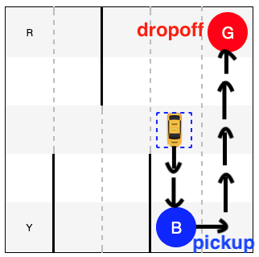
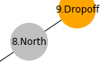

This activity was recovered from research/rl_taxi.ipynb. Its code is preserved but is not executed during the public book build, so readers can inspect it without requiring legacy package versions. Download the source notebook to run and modernize it interactively.

Motivation
Classification of individual data instances
More complex problems:
No clearly defined class labels
Better or worse, instead of true or false
Learning from a sequence of trials
In supervised learning or classification, we focus on an individual data instance at a time and try to make a prediction or decision based on features of that single instance. While we may have built a model based on a large number of training samples, testing is conducted more or less on an isolated data instance, where the result of other test data has no impact.
In reality, however, we have many situations and problems that are much more complex than what can be treated as classification for a number of reasons. For one, there might not be a clearly defined set of labels or training data for supervised learning. Perhaps, it is not possible to tell whether an action or decision is right (true) or wrong (false) under the current circumstance. Rather, it should be focused on what is better (improving) or worse. So the objective has more to do with optimaization than classification.
More important, it normally takes more than one trials to figure out what is working vs. what is not. So whatever learning model we employ for tasks will have to analyze a sequence of actions and returns to identify an effective model.
Example, a robot learning to play soccer: + When to dribble? When to pass a ball? + Timing is key, e.g. a sequence of (teamwork) actions leading to a goal
Imagine if you are a striker, the success of your actions (e.g. passing, dribbling, and scoring) depends on your interactions with the environment, for example: + Who has the ball and where the ball is going + Where your teammates are or running toward + Where players on the other team are and/or moving to …
It is a very dynamic environment that is constantly changing and you need to be alert about what may happen next so you can be there in the right place at the right moment, e.g. to receive the ball and score.
Reinforcement Learning
The soccer game illustrates several important concepts in Reinforcement Learning:
Agent is a software program, just like a soccer player, who learns and adapts to perform Actions, e.g. to play in a soccer game.
Environment refers to the entire dynamically changing setting where agents operate, e.g. the soccer field, players, referees, and their interactions under the rules.
State of the environment such as the location of the ball and moving speeds of players.
Reward or Penalty as a result of an agent’s action. For example, there are big rewards such as scoring a goal or penalties such as receiving a red card; but there are also minor rewards such as passing the ball accurately and being able to have longer procession, which may lead to opportunities to score.
Q-Learning
Through actions and interactions (state and reward) with the environment, it is possible for an agent to gain knowledge and improve its actions. We refer to as
The Policy: the method (strategy) an agent uses to act on its knowledge to maximize its long-term rewards.
Q-Learning is a reinforcement learning policy, in which the agent keeps track of rewards associated with each state and action.
Q-Table
Specifically, the agent stores rewards in a so-called Q-table like this:
\(A_1\)
\(A_2\)
\(A_3\)
..
\(A_m\)
\(S_1\)
0
0
0
0
\(S_2\)
0
0
0
0
..
0
0
0
0
\(S_n\)
0
0
0
0
where: + \(S_1, S_2, .., S_n\) are all possible states (rows). + \(A_1, A_2, .., A_m\) are all possible actions (columns) for each state.
The Q-table is initiated with \(0\) values and gets updated whenever the agent performs an action and receives a reward (or penalty) from the environment.
Suppose at time \(t\), the agent is at the state of \(s_t\), performs an action \(a_t\) and receives a reward of \(r_t\).
where: + \(\beta \in [0,1]\) is the learning rate. A greater \(\beta\) leads to more aggressive updating. + \(\gamma \in [0,1]\) is the discount factor for future rewards. A greater \(\gamma\) tends to put more emphasis on long-term rewards.
Exploration vs. Exploitation
An agent learns from trials and errors. So learning requires (random) exploration in the environment. At some points, the agent may gain “sufficient” knowledge to make wiser decisions based on a trained Q-table. However, in order to allow opportunities to continued learning, one should avoid complete exploitation of Q-table for action selection.
For the tradeoff, we introduce a third parameter \(\epsilon\) (probability), at time \(t\):
With \(\epsilon\) probability, the agent selects a random action.
With \(1 - \epsilon\) probability, the agent selects the action with the maximum reward for state \(s_t\) in the Q-table: \(a_t = \underset{a}{\operatorname{argmax}}{r(s_t,a)}\)
Pick up a passenger from a location (in blue color), at R, G, B, or Y.
Drop off the passenger at the target location (in red), at R, G, B, or Y.
Travel as little as possible to complete the tasks.
In each state, the cab can take any of the following actions:
Move south
Move north
Move east
Most west
Pickup passenger
Dropoff passenger
There are related rewards and penalties for each action:
\(-1\) point penalty for each action/move (just like gasoline consumption).
\(-10\) points penalty for illegal pickup or dropoff.
\(20\) points reward for a successful delivery of the passenger.
For example, given the following state where the cab is to: 1. Pick up passenger at pickup location (blue); 2. Drive to the destination at destination (red); 3. Drop off the passenger.
Code
env.reset()env.s =328
Code
display(HTML(str2html(env.render(mode="ansi"))))
Action without Learning
How can the agent (cab) learn to perform the tasks?
We will first start with a dummy verion where the cab: + simply selects a random action + and does not learn
action = env.action_space.sample() state, reward, done, info = env.step(action)
You can tell that the cab is fooling around and its moves and actions are random and meaningless. By looking at the behavior of the cab, we can hardly have confidence in it to develop any intelligence and to perform a better job.
The strategy of random actions does not work!
Explore and Learn
Now let’s follow the Q-Learning idea so the agent (cab) can learn from its failures and successes. In particular, we would like the agent to remember what works vs. what does not, that is:
What are past rewards (or penalties) for each action taken in each state.
We know there are \(6\) different actions the cab can select from. But how many states are there?
Here are factors to be considered in the combinations of states:
The cab can be at one of the \(5\times5\) blocks.
The passenger can be at one of the \(4\) pickup locations (RGBY) or in the cab: \(\times5\).
The cab is to drop off the passenger at one of the \(4\) locations: \(\times4\).
The total number of states: \(5\times5\times5\times4=500\).
So we need to create a Q-table of \(500\) rows (states) \(\times\)\(6\) columns (actions):
Code
import numpy as npq_table = np.zeros([env.observation_space.n, env.action_space.n])
We start with a Q-table like this (first 10 states):
Code
q_table[0:10]
Each row has \(6\) columns because there is one value for each of the \(6\) actions. We only show first 10 states here but remember there are \(500\) rows (states) in total.
Now we will let the agent (cab) explore a little bit, with \(\epsilon=0.1\).
Given the current state, the agent has: + \(10\%\) probability to explore and select random actions.
action = env.action_space.sample()
\(90\%\) probability to select the best action based on the Q-table (memory)
action = np.argmax(q_table[state])
After the action, the agent (cab) receives a reward and updates its Q-table:
where: + \(\beta = 0.1\) is the learning rate + \(\gamma = 0.6\) is the discount for future rewards + \(Q(s_t, a_t)\) is the value in Q-table for state \(s_t\) and action \(a_t\) + \(r_t\) is the the received reward (or penalty) + \(Q'(s_t, a_t)\) denotes the updated value in Q-table
Code
%%time"""Agent under training"""import randomfrom IPython.display import clear_output# Hyperparametersa =0.1# alphag =0.6# gammae =0.1# epsilon# keeping track ofall_epochs = []all_penalties = []# Train the cab for 100,000 tasksfor i inrange(1, 10**5+1): state = env.reset() epochs, penalties, reward =0, 0, 0 done =Falsewhilenot done: if random.uniform(0, 1) < e: action = env.action_space.sample() # random explorationelse: action = np.argmax(q_table[state]) # act on knowledge next_state, reward, done, info = env.step(action) next_max = np.max(q_table[next_state]) old_value = q_table[state, action] new_value = (1- a) * old_value + a * (reward + g * next_max) q_table[state, action] = new_valueif reward ==-10: penalties +=1 state = next_state epochs +=1if i %100==0: clear_output(wait=True)print(f"Episode: {i}")print("Agent is trained!")
After training the agent (cab) for: + \(100,000\) tasks + about 1 minute on a Mac
As the agent goes down the path, the number of potential choices and actions increase exponentially. How does the agent get rewarded for one of the most efficient path?
In particular, how does the agent maximize its long-term award by moving south first in the following step?
So every \(state \to action\) on the shown path will receive the same penalty of \(-1\) and updated with a new value of \(-0.1\) in the Q-table. One may think with this penalty along the path, the agent may not favor similar actions in the future.
Code
show_graph()
However, when the cab reaches to the destination and selects an dropoff action at state 8:

It receives a reward of \(20\)
It updates its Q-values for action dropoff at state 8.
With the new updated value of \(2\) for a dropoff at state 8, the agent will favor this specific action at this specific state in the future. But how about the previous actions at previous states leading to the dropoff? How do they get rewarded as well?
The main takeaway here is that a reward at one state will be “backpropagated” to an earlier \(state, action\) leading to that favorable state. With a sufficient number of iterations to train the agent, the rewards or penalties will be carried all the way back to even earlier state-actions.
In the end, the reward received for dropoff at state 8 will have an impact on going south at state 0, even though they are only remotely connected. Overall, the Q-learning policy will help improve the taxi cab’s behavior toward greater long-term rewards.
Comparison
Let’s compare the dummy cab (random model) and the trained model side by side:
It is easy to tell that while the random model continues to lose and accumulate penalties, the trained model is much smarter in knowing how to move directly to pickup and dropoff locations to maximize its rewards.
Applications of Q-learning certainly go beyond the simplified taxi cab example here. A recent example is the AlphaGo that defeated the best human player. One can also imagine a similar reinforcement learning policy to be used by a smart floor vaccum to maximize the amount of dirt it can pick up to make your rooms clean.